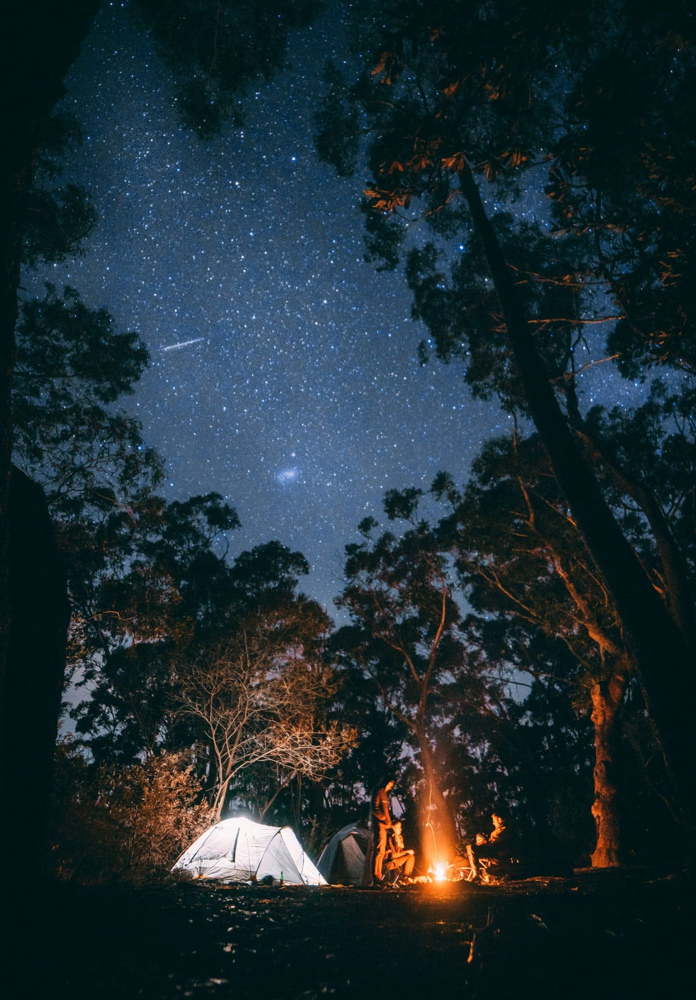

Фритрек и нулевой спринт: Подготовка к работе
свобода мысли

Это было самое начало пути. На этом этапе важно было проникнуться основами и настроиться на
учёбу. И, возможно, подумать, как новые знания могут повлиять на ваше будущее.
На изучение фронтенда меня вдохновили пары в университете. Я долго не могла понять чем мне нравится заниматься и
в какой сфере хотелось бы работать. Нулевой спринт лишь убедил меня изучать разработку и дал свежий глоток
воздуха.
1 спринт: Я — чистый лист
новый горизонт
На первых этапах мы работали со страхами и сомнениями, которые часто испытывают новички. Один
из них — страх перед чистым листом. Это, конечно же, намного сложнее, чем боязнь куска бумаги. Часто за этим
ощущением скрываются более глубокие вопросы: с чего начать? а вдруг будет слишком сложно? что, если я не
справлюсь?
Благодаря университету у меня уже были базовые знания о верстке и я с большим удовольствием закрепляла материал
и проходила тренажеры в Практикуме.
1 спринт: А если не получится?
неизвестность

Первый проект — позади! Но это всё ещё самое начало пути. Радость могла быстро померкнуть и
смениться ожиданием провала. Или вы, наоборот, могли вдохновиться успехами и поверить в себя.
Впервые увидев учебный проект я немного растерялась. Мне казалось, что так много кода и сразу я не способна
написать. Но с каждым потраченным часом на выполнение проекта приходило понимание и осмысление происходящего.
Мне очень понравилось что я уже на 1 спринте сделала свой лендинг.
2 спринт: Погоня за идеалом
перфекционизм

На этом этапе вы уже достаточно разбирались в основах вёрстки, чтобы понять, как много ещё
впереди. Вы могли попытаться погнаться за идеалом и понять, что он недостижим. А, может, вы вовсе и не
подвержены перфекционизму и вместо того, чтобы сделать идеально, старались просто сделать.
Попасть пиксель в пиксель - вот, что казалось мне вершиной верстки. Я любила использовать абсолютные величины,
чтобы всё было четко и однозначно. Но адаптивность дала мне понять, что функционал превыше идеальной картинки.
Если сайт гибкий, то расхождения в несколько пикселей с макетом не делают его плохим.
2 спринт: О тех, кто рядом
тепло

Всё это время вы были не одиноки (хотя, возможно, иногда и чувствовали, что одни против
целого мира). Вас окружали одногруппники, команда сопровождения и просто близкие люди, которым можно
пожаловаться, если очередной макет просто так не поддавался. Осваивать что-то новое легче, когда рядом есть
единомышленники, не правда ли?
Я переходила из когорты в когорту дважды и везде чувствуется поддержка наставников, рабочая атмосфера в чате
одногруппников. Я редко задаю вопросы, люблю поразбираться сама, но я всегда знала, что на любой мой вопрос
ответят. Приятно что наставники отвечают каждому и стараются индивидуально помочь разобраться или даже
замотивировать ученика.
3 спринт: Обходные стратегии
тревога

На этом курсе вы постоянно решали разные задачи. В какой-то момент вам могло показаться, что
решения просто иссякли. Значит, пришло время посмотреть на задачу под другим углом.
Третий спринт я проходила второпях всвязи с плотным рабочим графиком. В голове все перемешалось и стало одним
большим комком информации. Пришлось взять паузу, чтобы разложить все по полочкам.
3 спринт: Когда опускаются руки
определенность

Во время учёбы часто возникает чувство, когда не знаешь, за что хвататься. Вроде и проектную
пора сдавать, и задачи хочется порешать, и в теории получше разобраться, и жизнь не забыть пожить. В такие
моменты очень нужна концентрация. Вспомните, откуда вы её черпали.
Спустя время и переход в другую когорту, я достаточно быстро и без особых трудностей справилась с учебным
проектом 3 спринта. Вышла из темного леса и пошла своей дорогой, где мне понятен каждый шаг. Алгоритм разработки
сайта сам сформировался у меня в голове, благодаря всем ранее прочитанным материалам на Практикуме.
«Сейчас я здесь»
вдохновение
Сейчас вы уже очень много знаете о вёрстке. Но это только начало. Во-первых, впереди ещё
много материала про «красотищу». Во-вторых, с окончанием курса учёба не заканчивается. Вёрстка — это целый мир.
И этот мир постоянно меняется. Познать его полностью не получится, но это тот случай, когда важен сам процесс
познания. Ведь часто путь — и есть результат.
Я чувствую, что уже не действую вслепую и только по инструкции. Мне нравится верстать проекты и я готова тратить
на это много времени. Однако есть опасения насчет js... Я понимаю, что со временем я и с ним справлюсь, но это
что-то новое и всегда вызывает тревогу.